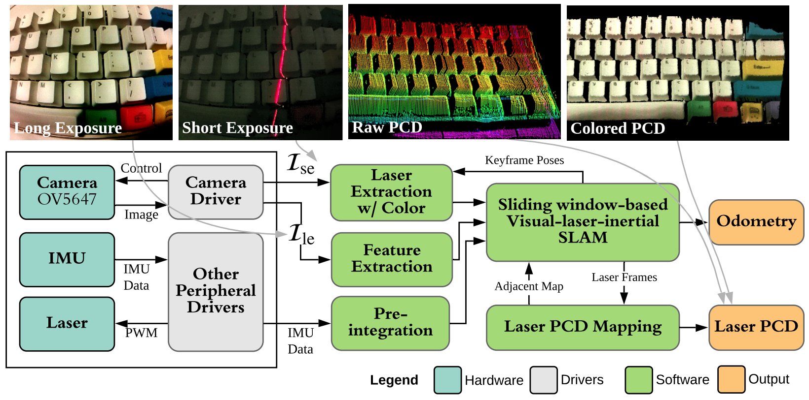
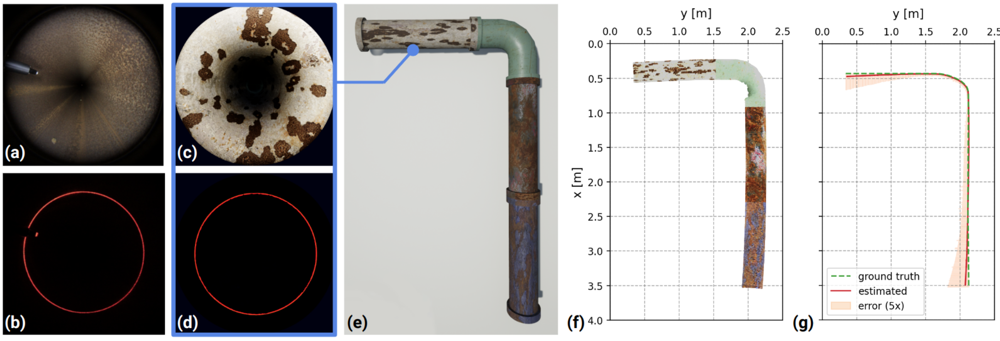
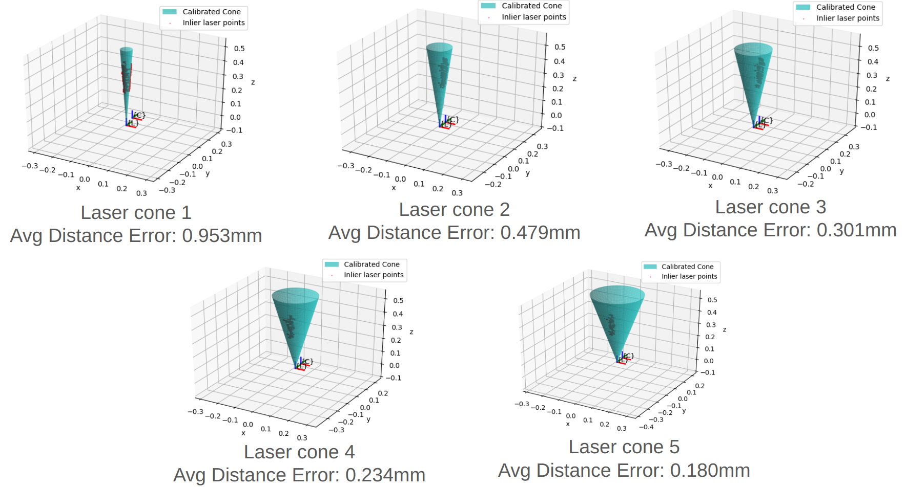

Visual-Laser-Inertial SLAM for 3D Reconstruction of Confined Pipes

Overview
This work extended our lab’s previous work - a compact, low-cast visual-laser-inertial (VLI) SLAM-based 3D scanner - to narrow pipe environments. This technique enables in-pipe 3D reconstruction and defect detection.
In-pipe VLI-SLAM for Pipe Inspection

VLI-SLAM
The above in-pipe 3D reconstruction is adapted from VLI-SLAM, a prior work of our lab. VLI-SLAM incorporates the laser-based structured light technique into a traditional monocular visual-inertial SLAM system.
The following figures illustrate the hardware prototype for deploying VLI-SLAM, the ray-casting problem for solving the depth of laser point, and the software framework of VLI-SLAM.
Hardware Prototype of the Original Compact Scanner
Ray-casting Problem of the Laser-based Structured Light
Software framework and data flow visualization of VLI-SLAM
Extend VLI-SLAM to In-pipe Environments
To extend VLI-SLAM to in-pipe environments, the main problem is to consider the prototype design, especially how to achieve the laser-based structured light system. A straight-forward way is to project laser beam onto a conic mirror to generate laser-ring, as the following figures show.
Hardware Prototype of the In-pipe Robot with Laser Pole
Ray-casting Problem of the Laser-based Structured Light with Laser Ring
Unreal Engine Simulation
The figures (a), (b) are from the real pipe; (c), (d) are from the simulated environment.
Another Design Exploration
This above laser pole-based design is our current and most mature model. However, this design requires a dedicated laser pole to generate the laser ring, which restricts the robot’s mobility in confined pipes, particularly during turns. So we also explored other solutions, for example, generate a conical laser emission using diffractive optical elements. The first question is how to calibrate the conical laser surface. The following is our proposed laser cone calibration method, which achieves sub-millimeter accuracy even though the detected laser points are sparse and unevenly distributed.
Calibration Software Procedure:
Step 1: An image review window will pop up for collecting images (Press “s” to save image or “q” to exit).
In this step, we need to pay attention that the laser points near the checkerboard corners will interfere the detection of the checkerboard corners, as shown in the figure below, so we need to avoid the collision. Currently I just physically masked some parts of the laser.
Figure: Collision of laser points and checkerboard corners
Step 2: Another window will pop up to examine the Laser detection result. (Press ‘y’ to accept, ’n’ to reject current image).
Figure: An example visualization in step 2
In this step, the 0-Order laser point and laser rings in each image are detected, and the user can see the result in a window. If the detection for some images is not so good, the user can reject these images. The figure above is an example visualization in step 2. The white point is the 0-Order laser point, and the blue points are those belong to laser rings.
Step 3: Laser cones will be fitted and visualized, results will be saved in config files.
Figure: Pipeline of laser cones fitting
Laser Cone Fitting
In this step, the laser cones will be fitted with the accepted images. The pipeline for laser cones fitting is shown in the figure above.
We firstly use the detected 0-Order laser points to fit the cone axis equation in camera frame with RANSAC, the equation is represented in parametric form:
$$x = x_0 + v_x s$$
$$y = y_0 + v_y s$$
$$z = z_0 + v_z s$$
Then, we can try to fit the cone in the laser frame (origin is the cone vertex). This is because in laser frame, the cone can be described by the standard cone equation, so the shape can be constrained:
$$\frac{x_l^2 + y_l^2}{a^2} - \frac{z_l^2}{b^2} = 0$$
Let $R^{cl}$ and $t^{cl}$ represent the rotation and translation from camera frame to laser frame, we have:
$$X_l = R^{cl}X_c + t^{cl}$$
where $X_l = [x_l, y_l, z_l]^T$ is the coordinates in laser frame, and $X_c = [x_c, y_c, z_c]^T$ is the coordinates in camera frame.
For $R^{cl}$, it can be simply computed after we get the equation of the cone axis. But currently we don’t know $t_{cl}$ since we don’t know the position of the cone vertex. Therefore, to fit the cone, we need to modify the equation (4), let $r_l^2 = x_l^2 + y_l^2$, and $b = 1$, the equation becomes:
$$r_l^2 = a^2 z_l^2$$
Here $r_l$ is actually the distance from the laser point to the cone axis, so it can be computed in the camera frame without knowing the camera-laser transformation. In addition, since $r_l, a, z_l > 0$, we can simplify the equation as:
$$r_l = a z_l$$
Then, according to the previous equation, we have:
$$z_l = R^{cl}_3 X_c + t^{cl}_3$$
where $R^{cl}_3$ is the third row of $R^{cl}$, and $t^{cl}_3$ is the third row of $t^{cl}$.
Let $z_l’ = R^{cl}_3 X_c$, $k = a \cdot t^{cl}_3$, and substitute into the equation, we have:
$$r_l = az_l’ + k$$
In this equation, $z_l’$ is only determined by the coordinates of laser points in camera frame and the camera-laser rotation, it can also be computed without knowing the translation $t^{cl}$. Therefore, we can use line fitting and RANSAC to obtain the parameters $a$ and $k$, and then we have $t^{cl}_3 = \frac{k}{a}$. Now, we get the cone equation in laser frame.
Finally, to obtain the camera-laser translation $t^{cl}$, we can let $X_{l0} = 0$ (since the coordinate of the cone vertex in laser frame is 0), then we have:
$$X_{c0} = -(R^{cl})^T t^{cl}$$
where $X_{c0}$ is the coordinate of the cone vertex in camera frame. Besides, according to the cone axis equation, we have:
For the above system of linear equations, we have three variables: $t^{cl}_1$, $t^{cl}_2$, $s_0$, and we have three linear equations, so the system can be solved and we can get the translation.
Finally, the cone equation parameter $a$, camera-laser rotation $R^{cl}$, and translation $t^{cl}$ are all obtained, and the calibration finished.
Calibration Results for Some Laser Cone Surfaces
Xiang Fei
Master of Science in Robotics (MSR)
My current research interests include Robotics, SLAM, and Deep Learning.